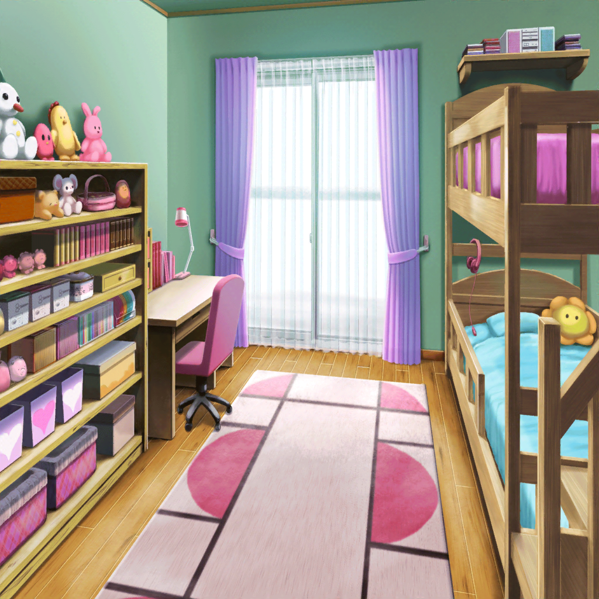

公園
花音
日差しが気持ちいいね。りみちゃんが言ってた通り、
日なたぼっこにはピッタリだよ
りみ
はい。ベンチには直接日が当たらないから、
のんびりするのにちょうど良くて……
りみ・花音
……
花音
あの……りみちゃん。聞いてもいいかな？
りみ
……はい
花音
その、りみちゃんの考えごとって
もしかして今度のライブのこと？
りみ
…………はい
りみ
実は私、さっきまで家で練習してたんですけど、
全然うまくいかなくて。
何度も同じところでつまづいちゃってて……
りみ
それで、お姉ちゃんが気分転換しておいでって
言ってくれたんです。けど……早く帰って練習しなきゃって
逆に不安になってきちゃって
りみ
不安と緊張で、どんどんうまくいかなくなるの
わかってるのに、ベースを触ってないと不安で……
でも練習もうまくいかなくて……
花音
そうだったんだ。
……りみちゃんの気持ち、わかるかも
花音
私も、ハロハピのライブが決まると
その日からずーっと緊張しっぱなしなんだ。
この前も授業中ぼんやりして、先生に怒られちゃった
りみ
花音先輩も？
あの……先輩は、そういう時どうしてるんですか？
花音
え？ えーっと……き、緊張したままかも……
りみ
そうなんですか？
やっぱり、緊張はどうしようもないのかな……
花音
あっ、で、でもね！
ほんのちょっとだけど、緊張をほぐす方法を見つけたんだよ！
花音
私の場合はなんだけどね。
緊張しちゃってる時は、お茶を淹れるんだ。
時間がない時は１杯だけ、とか決めたりして
りみ
お茶を……？
花音
うん！ 私、カフェが大好きなんだけど……
おうちでもお茶を飲むと、
カフェのゆったりした雰囲気を思い出せるの
花音
そうしてお茶を飲んでるとね、不思議と固まってた
気持ちと体がほぐれて、演奏に集中できるようになるんだ
花音
ドラムの前に座ると、また緊張しちゃうんだけどね。
それでも、スティックを持つ手が震えることは
なくなる……気がする…………たぶん……
りみ
た……たぶん、ですか……？
りみ
でも……なんとなく、わかった気がします。
自分なりのリラックス方法を見つける。私に必要なのは、
きっとそれなんですよね
りみ
花音先輩、ありがとうございます！
私、帰って色々試してみます
花音
ほ、ほんと？ 私、変なこと言ってないかな？
りみ
はい！ すっごく助かりました！
りみ
ところで花音先輩、どこかに行く途中だったんじゃ……？
その、時間大丈夫ですか？
花音
え？ あ、うん……そのー……
じ、実はね……私……迷子になってたんだ……
花音
駅に行きたいんだけど……りみちゃん、できれば方向だけでも
教えてもらえないかな？
りみ
はい！ もちろん！ って……ええ、迷子！？
りみ
ここ、花音先輩の家も近所のはずなのに……！？

帰宅後
牛込家 りみの部屋
りみ
（自分なりのリラックス方法。
色々考えたけど……私にはこれが１番のはず）
りみ
基礎を大事に。音にしっかり向き合うこと……うん。
チューニングを、いつもよりも丁寧にやってみよう
りみ
……
りみ
（ゆっくりと音が合っていくこの感じ。
だんだん頭がスッキリしてきたみたい……それに、なんだろう。
今、すごくワクワクしてる）
りみ
（丁寧に合わせた音。
この音で、早く曲が弾きたいって思ってるんだ。
……最後に４弦を…………よしっ）
りみ
落ち着いて、最初から弾いてみよう。
せーの……
りみ
〜〜〜〜♪
……弾けた！ さっきまで、全然指が動かなかったのに……！
ゆり
ちゃんと息抜きできたみたいだね
りみ
お姉ちゃん！
りみ
私わかったよ。
お姉ちゃんが言ってたこと……私が不安と緊張で
ただベースを弾いてるだけになってたこと
りみ
それじゃ意味がないってことを、
私に伝えようとしてくれてたんだよね？
ゆり
大げさすぎ。
私はただ、りみには息抜きが必要だって思っただけだよ
ゆり
まるで、昔の私を見てるみたいだったから……なんてね。
うまくいったみたいで良かった
りみ
（昔のお姉ちゃん？ そういえば、お姉ちゃん……少し前まで
よく公園にお散歩に行ってたな。
そっか。あの時のお姉ちゃんも、きっと……）
りみ
うんっ！ ありがとう、お姉ちゃん！
ゆり
どういたしまして。それじゃ、邪魔にならないうちに戻るね。
……りみ。ここが正念場だよ。しっかり頑張りなさい
りみ
……っ！ はいっ！
りみ
（そうだ、今はしっかり頑張らなくちゃ。
バラバラになっちゃったみんなを、また１つにするために……）
りみ
花音先輩にもちゃんとお礼言わなくちゃ。
そのためにも、今はしっかり練習しよう。
よしっ！ もう１回、最初から……！